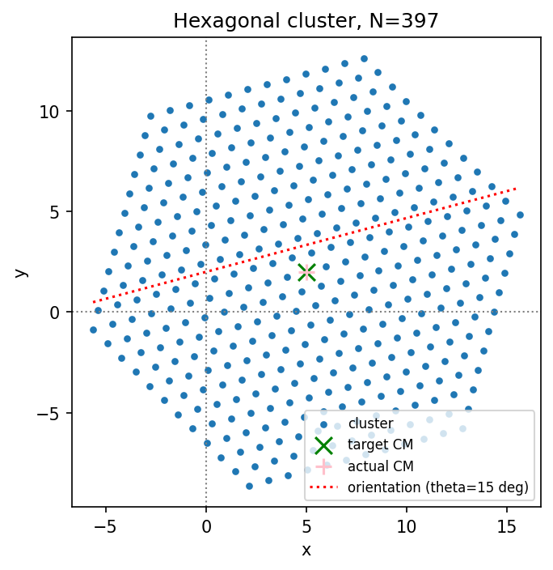
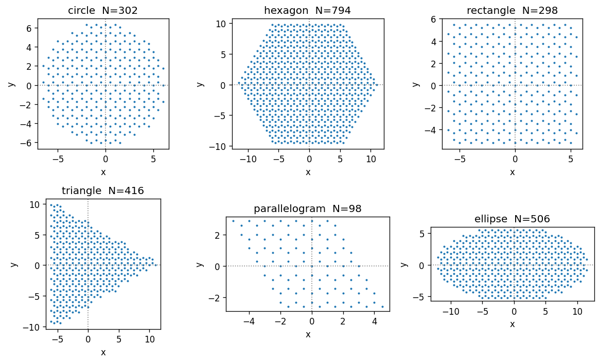
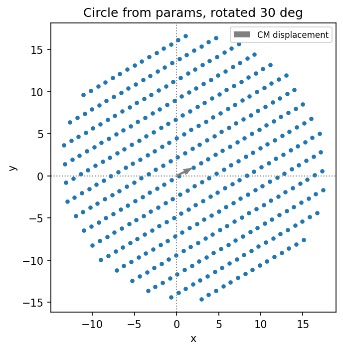
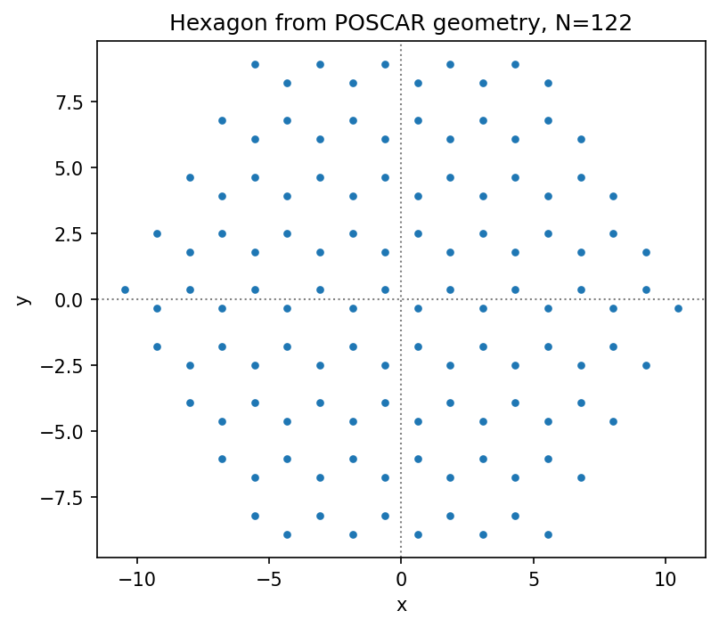
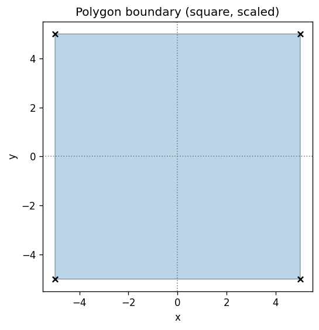
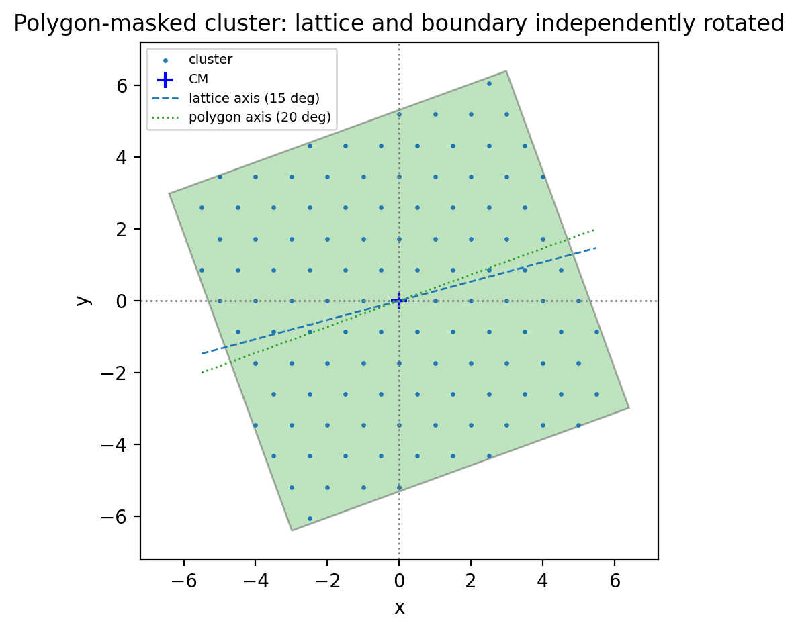
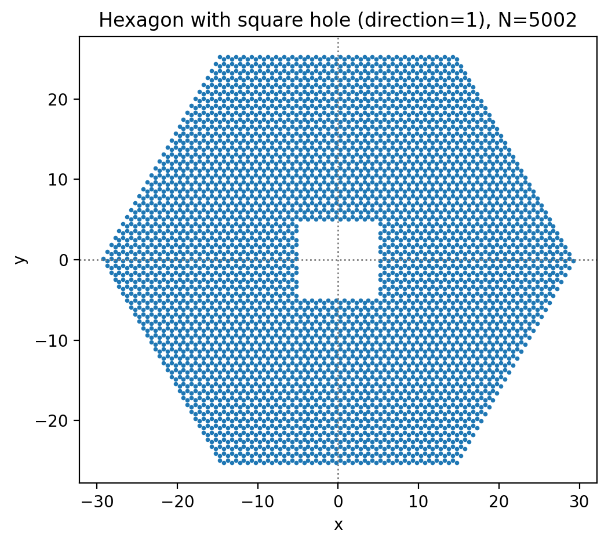

Cluster creation
A cluster is simply a collection of N 2D position vectors – the coordinates of the particles. Depending on your physical system, there are several ways to obtain these positions. This notebook walks through all of them.
[1]:
import numpy as np
from numpy import sqrt, pi, tan
import matplotlib.pyplot as plt
from flake.cluster import (make_cluster, rotate, add_basis,
save_cluster, load_cluster,
cluster_from_params,
params_from_poscar,
cluster_poly, get_poly)
from flake.plot import plt_cosmetic
Lattice and size
A cluster is a finite subset of a 2D Bravais lattice, cut to a given shape. The lattice is defined by two primitive vectors a1 and a2. N1 and N2 control the number of candidate lattice sites generated before the shape mask is applied – their exact meaning depends on the shape (see the module docstring for details).
[2]:
a1 = np.array([1., 0.])
a2 = np.array([-0.5, sqrt(3.)/2.]) # triangular lattice, spacing 1
N1, N2 = 12, 12
Single shape
make_cluster always returns an (N, 2) float64 array with the centre of mass (CM) at the origin and no rotation applied (theta=0 reference frame). Translation and rotation are applied explicitly afterwards – this keeps the cluster creation and the initial conditions for dynamics cleanly separated.
[3]:
pos = make_cluster(a1, a2, N1, N2, shape='hexagon')
print('Hexagon: N=%d particles' % pos.shape[0])
tho = 15. # rotation angle [degrees]
X0, Y0 = 5., 2. # target CM position
pos_shifted = rotate(pos, tho) + np.array([X0, Y0])
fig, ax = plt.subplots(dpi=150)
ax.scatter(pos_shifted[:,0], pos_shifted[:,1], s=10, label='cluster')
ax.scatter(X0, Y0, marker='x', color='green', s=100, label='target CM')
ax.scatter(*np.mean(pos_shifted, axis=0), marker='+',
color='pink', s=100, label='actual CM')
xx = np.linspace(pos_shifted[:,0].min(), pos_shifted[:,0].max())
ax.plot(xx, Y0 + xx * tan(tho * pi/180.),
lw=1.5, ls=':', color='red', label='orientation (theta=%.0f deg)' % tho)
ax.legend(fontsize=8)
ax.set_title('Hexagonal cluster, N=%d' % pos.shape[0])
plt_cosmetic(ax)
plt.tight_layout()
plt.show()
Hexagon: N=397 particles

All shapes
All available shapes on the same triangular lattice, with a honeycomb basis added. Adding a 2-atom basis doubles the number of particles per lattice site.
Shape guide:
circle: isotropic; good default for testing finite-size effects
hexagon: 6-fold symmetric; natural match for triangular lattice
rectangle: anisotropic contact; useful for directional friction studies
triangle: sharp edges; tests boundary effects
parallelogram: periodic-boundary compatible; exact tiling
ellipse: semi-axes rx = N1|a1|, ry = N2|a2|; anisotropic contact
[4]:
# Honeycomb basis: two atoms per unit cell.
# The second atom is displaced by (1/3)*a1 + (2/3)*a2 = [-1/6, 1/(2*sqrt(3))].
# The y-component 1/sqrt(3)/2 = 0.28867513...
cl_basis = [np.array([0., 0.]),
np.array([-0.5, 1./(2.*sqrt(3.))])] # = 0.28867513...
fig, axes = plt.subplots(2, 3, figsize=(10, 6), dpi=120)
axes = axes.ravel()
for ax, shape in zip(axes, ['circle', 'hexagon', 'rectangle',
'triangle', 'parallelogram', 'ellipse']):
# parallelogram requires sqrt(N1*N2) to be an odd integer
n1, n2 = (7, 7) if shape == 'parallelogram' else (N1, N2)
if shape == 'ellipse': n2 /= 2
try:
pos = make_cluster(a1, a2, n1, n2, shape=shape)
pos = add_basis(pos, cl_basis)
ax.scatter(pos[:,0], pos[:,1], s=2)
ax.set_title('%s N=%i' % (shape, pos.shape[0]))
except Exception as e:
ax.set_title('%s: %s' % (shape, e))
plt_cosmetic(ax)
plt.tight_layout()
plt.show()

Cluster from parameter dictionary
cluster_from_params builds a cluster from a plain Python dict – the standard interface when loading a YAML input file (e.g. for the CLI). It always returns positions with CM at the origin; shift and rotation are applied explicitly afterwards.
[5]:
params = {
'a1': [1., 0.], 'a2': [0., 2.], # rectangular lattice
'cl_basis': [[0., 0.]],
'cluster_shape': 'circle',
'N1': 20, 'N2': 20,
}
pos = cluster_from_params(params)
print('Cluster %s, N=%i' % (params['cluster_shape'], pos.shape[0]))
# Shift and rotate explicitly after creation.
theta, pos_cm = 30., np.array([2., 1.])
pos = rotate(pos, theta) + pos_cm
fig, ax = plt.subplots(dpi=150)
ax.scatter(pos[:,0], pos[:,1], s=10)
ax.quiver(0, 0, *pos_cm, angles='xy', scale_units='xy', scale=1,
color='gray', label='CM displacement')
ax.set_title('Circle from params, rotated %.0f deg' % theta)
ax.legend(fontsize=8)
plt_cosmetic(ax)
plt.tight_layout()
plt.show()
Cluster circle, N=389

Load from POSCAR
To model real materials it is convenient to import geometry directly from ab-initio codes. params_from_poscar reads a VASP POSCAR file and returns a parameter dict (a1, a2, cl_basis) ready for cluster_from_params. This is a thin wrapper around params_from_ASE; if you already have an ASE Atoms object you can use that function directly.
Requirements for the POSCAR:
2D periodicity must be encoded in the first two lattice vectors a, b (the third vector c must be along z)
All z-coordinates of the basis are projected away; use
cut_zto select a specific layer in a multi-layer slab
Requires: pip install ase
[6]:
# params_from_poscar returns (poscar_params, z_coords_of_ignored_atoms).
# poscar_params contains a1, a2, cl_basis extracted from the file.
# Requires ASE: pip install ase
poscar_params, pos_z_ignored = params_from_poscar('./data/C.poscar', cut_z=6)
for k, v in poscar_params.items():
if isinstance(v[0], list):
print('%15s:' % k)
for vv in v:
print(' '*16, vv)
else:
print('%15s: %s' % (k, v))
print('z coordinates of ignored atoms:', pos_z_ignored)
# Combine the loaded lattice geometry with the desired macroscopic shape.
params = {**poscar_params,
'cluster_shape': 'hexagon',
'N1': 5, 'N2': 5}
pos = cluster_from_params(params)
print('Cluster %s, N=%i' % (params['cluster_shape'], pos.shape[0]))
fig, ax = plt.subplots(dpi=150)
ax.scatter(pos[:,0], pos[:,1], s=10)
ax.set_title('Hexagon from POSCAR geometry, N=%d' % pos.shape[0])
plt_cosmetic(ax)
plt.tight_layout()
plt.show()
a1: [1.2338620706831436, -2.137111795955346]
a2: [1.2338620706831436, 2.137111795955346]
cl_basis:
[0.0, 0.0]
[1.2338620706831438, -0.7123705986517821]
z coordinates of ignored atoms: [6.5137785 6.5137785]
Cluster hexagon, N=122

Cluster from polygon shape
To match an experimental cluster shape or test unusual geometries, you can define the cluster boundary as an arbitrary polygon. The Shapely package handles the point-in-polygon test.
The polygon is defined by its vertices; any convex or concave shape works.
[7]:
from shapely.geometry import Polygon
from shapely.plotting import patch_from_polygon
[8]:
# Define the polygon boundary by its vertices.
# Uncomment the shape you want; only one should be active.
# --- Circle approximated as a 50-gon ---
# t = np.linspace(0, 1, 50, endpoint=False)
# poly_points = np.stack([np.cos(2*pi*t), np.sin(2*pi*t)], axis=1)
# --- Square ---
poly_points = np.array([[-1.,-1.], [1.,-1.], [1.,1.], [-1.,1.]])
# --- L-shape ---
# poly_points = np.array([[0.,0.], [3.,0.], [3.,1.],
# [1.,1.], [1.,7.], [0.,7.]])
# Scale and centre.
poly_points = poly_points * 5.
poly_points -= np.mean(poly_points, axis=0)
poly = Polygon(poly_points)
fig, ax = plt.subplots(dpi=120)
patch = patch_from_polygon(poly, facecolor='tab:blue', alpha=0.3)
ax.add_patch(patch)
ax.scatter(poly_points[:,0], poly_points[:,1], c='k', marker='x', s=30)
ax.set_title('Polygon boundary (square, scaled)')
plt_cosmetic(ax)
plt.tight_layout()
plt.show()

Mask lattice with polygon
cluster_poly generates a lattice inside the bounding box of the polygon, then keeps only the points inside it (direction=0) or outside it (direction=1, for cutting holes).
The key feature is that the polygon and the lattice can be rotated independently – this is how you create clusters with a deliberate mismatch between the cluster symmetry axis and the boundary shape.
[9]:
# Polygon rotation is independent of the lattice orientation.
tho = 20. # polygon rotation [degrees]
poly_rotated = get_poly(poly_points, tho=tho, shift=[0., 0.], cm=False, scale=1)
params = {
'a1': [1., 0.], 'a2': [-0.5, sqrt(3.)/2.],
'cl_basis': [[0., 0.]],
'N1': 20, 'N2': 20,
'theta': 15, # lattice orientation [degrees] -- independent of polygon
}
# direction=0: keep lattice points inside polygon
pos = cluster_poly(poly_rotated, params, direction=0)
pos -= np.mean(pos, axis=0) # re-centre CM
print('N=%i, CM=%s' % (pos.shape[0], np.mean(pos, axis=0)))
fig, ax = plt.subplots(dpi=200)
ax.add_patch(patch_from_polygon(poly_rotated,
facecolor='tab:green', alpha=0.3, zorder=0))
ax.scatter(pos[:,0], pos[:,1], s=2, label='cluster')
ax.scatter(*np.mean(pos, axis=0), marker='+', c='blue', s=80, label='CM')
xx = np.linspace(pos[:,0].min(), pos[:,0].max())
ax.plot(xx, xx*tan(params['theta']*pi/180.),
ls='--', lw=1, color='tab:blue', label='lattice axis (%.0f deg)' % params['theta'])
ax.plot(xx, xx*tan(tho*pi/180.),
ls=':', lw=1, color='tab:green', label='polygon axis (%.0f deg)' % tho)
side = 1.1 * np.max(np.linalg.norm(pos, axis=1))
ax.set_xlim([-side, side])
ax.set_ylim([-side, side])
ax.legend(fontsize=7)
ax.set_title('Polygon-masked cluster: lattice and boundary independently rotated')
plt_cosmetic(ax)
plt.tight_layout()
plt.show()
N=117, CM=[ 0.00000000e+00 -2.27738056e-17]

Polygon from params (with hole)
cluster_from_params with cluster_shape='polygon' and masked_shape lets you punch a polygon hole into a base shape. Set direction=1 to remove points inside the polygon rather than keeping them.
[10]:
# Punch the square polygon as a hole into a hexagonal cluster.
params_hole = {
'a1': [1., 0.], 'a2': [-0.5, sqrt(3.)/2.],
'cl_basis': [[0., 0.], [-0.5, 1./(2.*sqrt(3.))]], # honeycomb basis
'cl_poly': poly_points.tolist(),
'cluster_shape': 'polygon',
'masked_shape': 'hexagon', # base shape to punch the hole into
'direction': 1, # 1 = remove points inside polygon
'N1': 30, 'N2': 30,
'theta': 10, # lattice rotation [degrees]
}
pos = cluster_from_params(params_hole)
pos -= np.mean(pos, axis=0)
print('N=%i' % pos.shape[0])
fig, ax = plt.subplots(dpi=200)
ax.scatter(pos[:,0], pos[:,1], s=3)
ax.set_title('Hexagon with square hole (direction=1), N=%d' % pos.shape[0])
plt_cosmetic(ax)
plt.tight_layout()
plt.show()
N=5002
